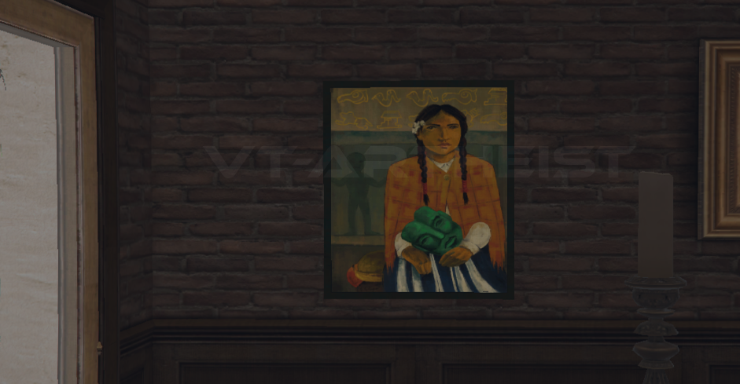
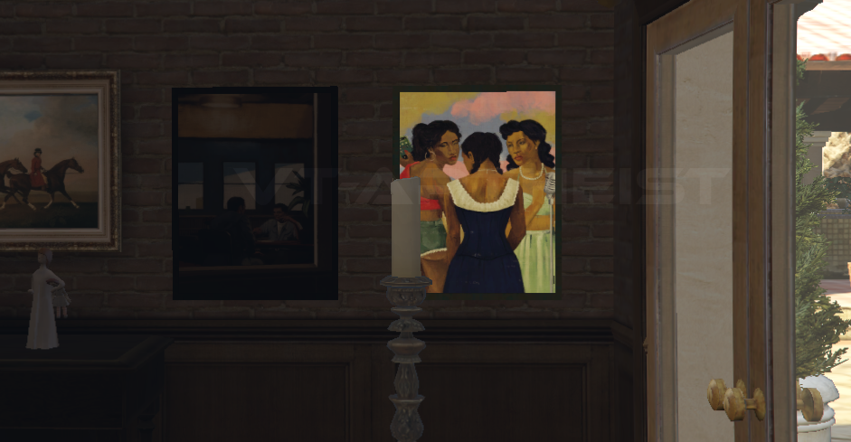
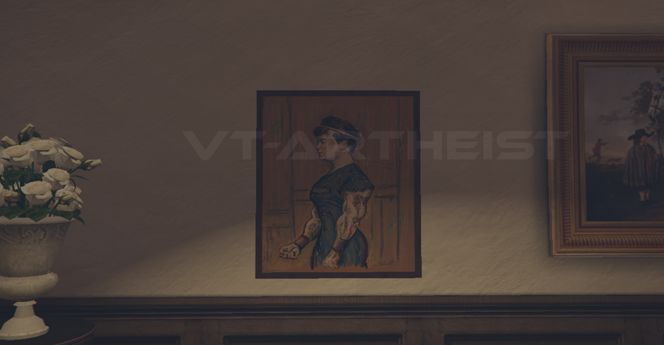
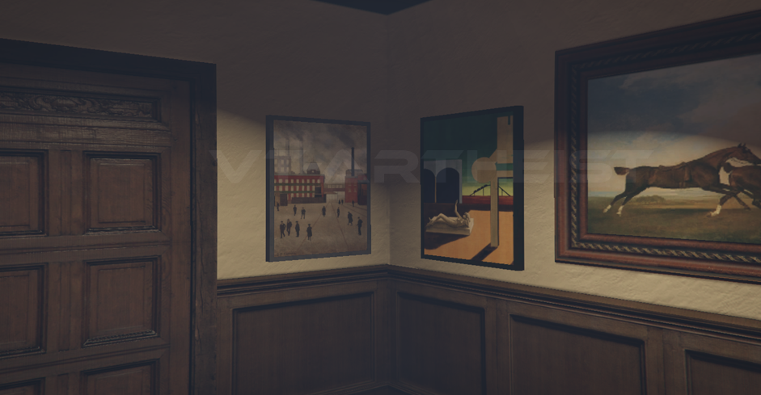

This is the first picture. It's easy!

The next two paintings are right behind you. Even easier to find.
Start Heist
The next picture is more of the corridor at the bottom. It's easy! man!

If you find the painting from the third photo, you will also find the last two. Thanks for doing your job, man!
